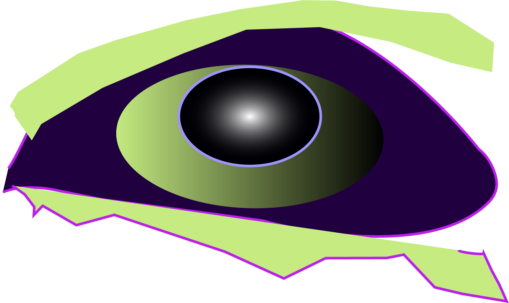
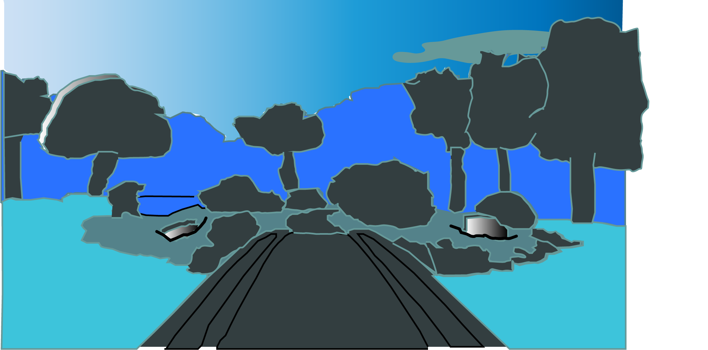

I chose an idyllic background that evokes peace and relaxation. We live in the city, and I wanted to choose a place that is the polar opposite of technology and innovation. I transformed it by tracing the fine details of the bridge and used the triadic palette of the most peaceful colors. I also duplicated some layers to create shadows and highlights. Back to Homepage